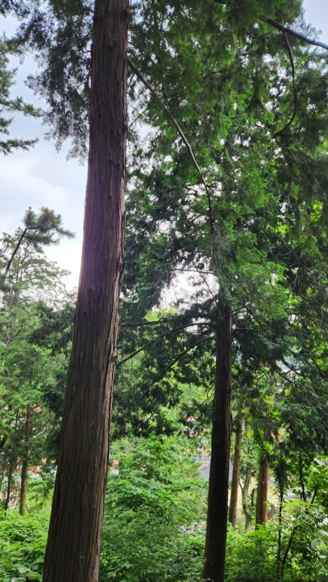
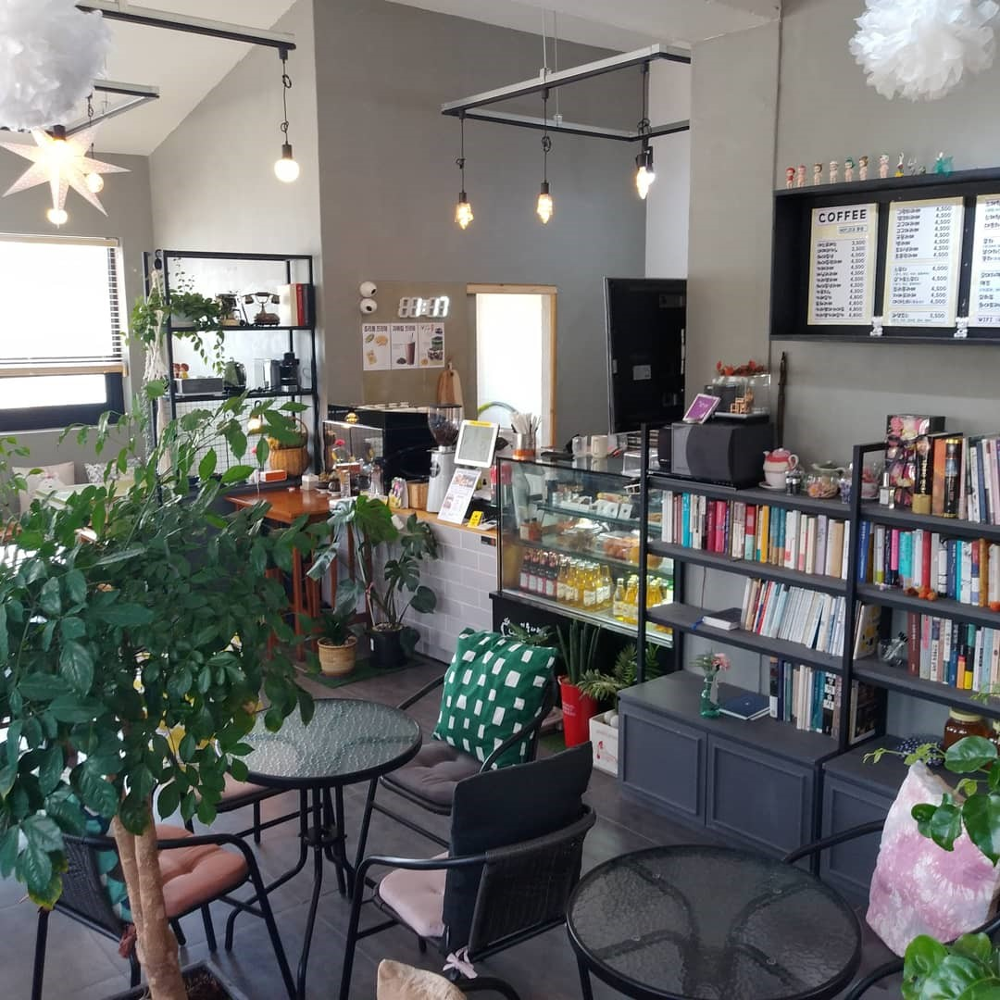
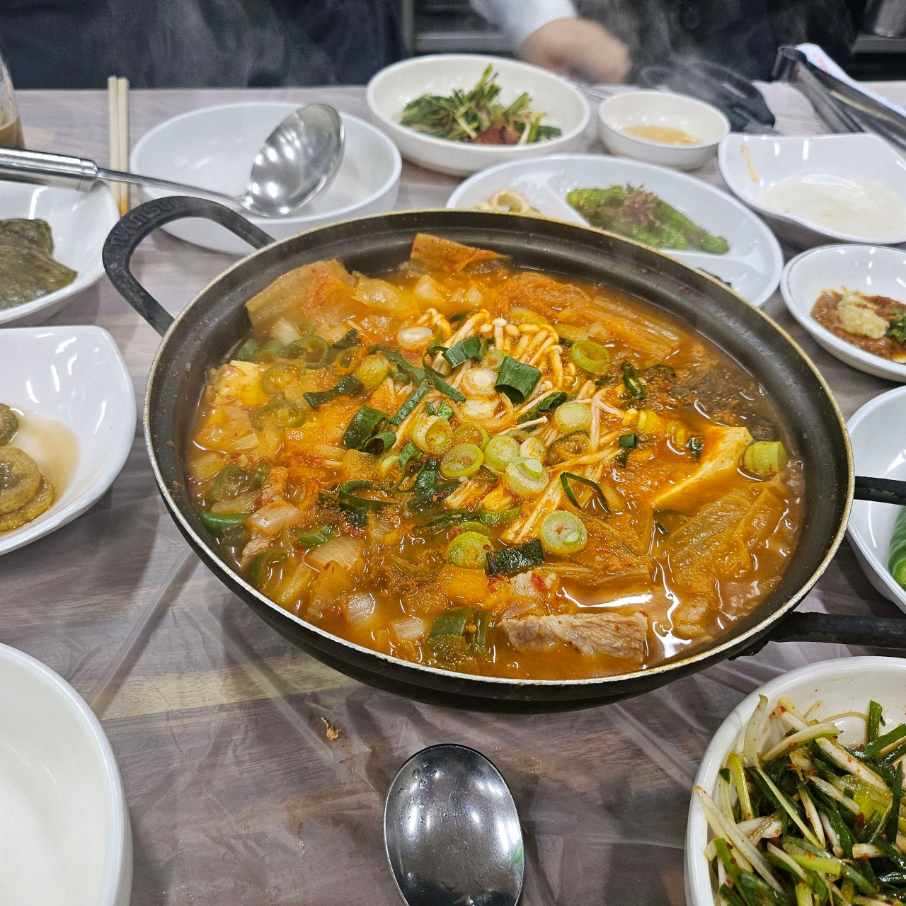
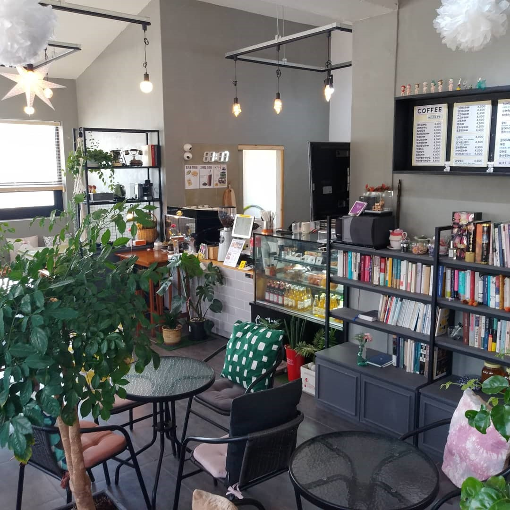
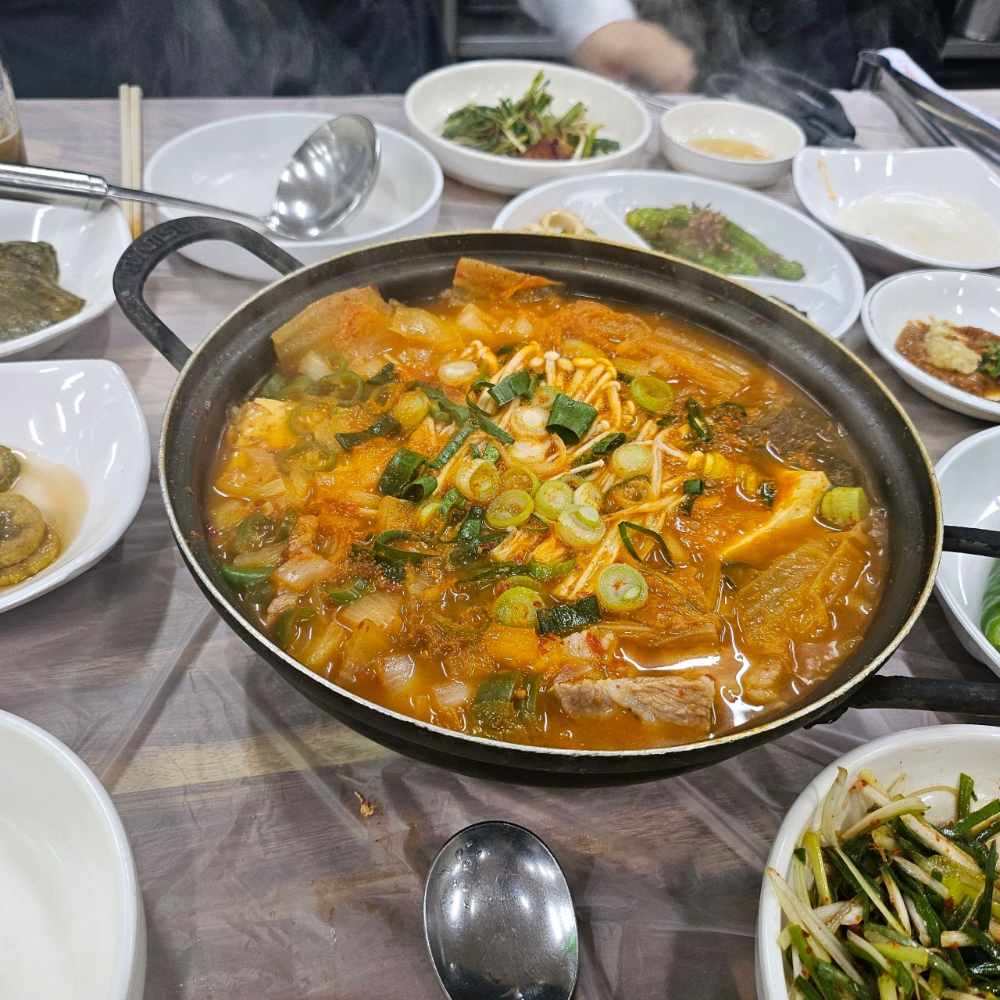
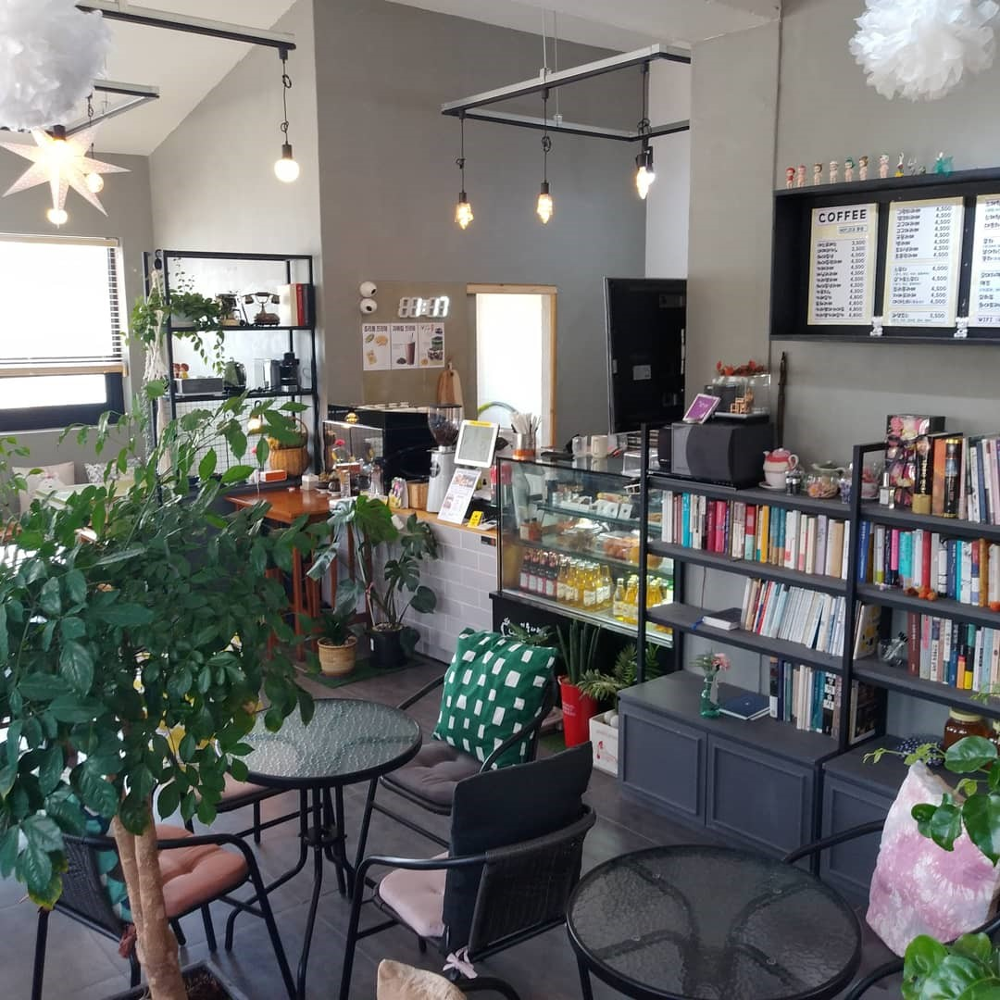
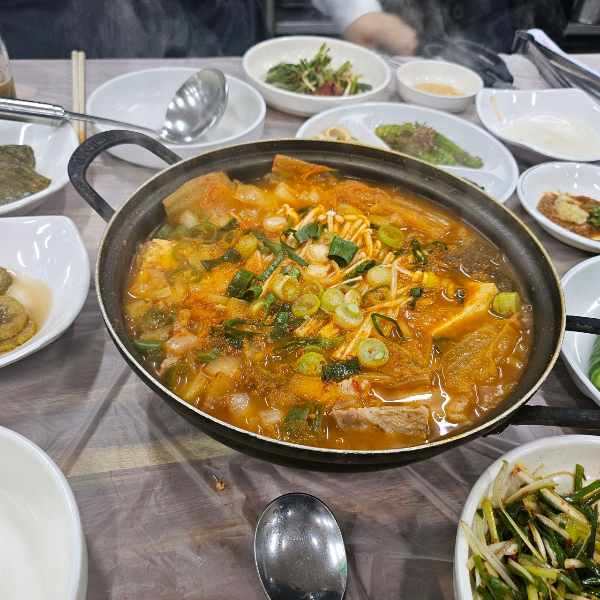

 





<< 힐링 코스 >>
1. 편백나무 숲 - 많은 공기와 고요한 분위기로 힐링을 원하는 사람들에게 최적의 장소입니다. 사랑이 나무를 둘러싸며 풍경 속에서 여유롭게 산책하며 자연의 소리를 느낄 수 있습니다.
2. 선류선장(카페) - 따뜻한 커피 한 잔을 마시며 색다른 감각이 가득한 공간입니다. 창문 너머로 보이는 숲의 장면은 마음을 안정시켜 주며, 지친 여러분의 일상에서 잠시 여유를 느낄 수 있습니다.
3. 책카페 - 책과 함께 여유로운 시간을 보낼 수 있는 편안한 공간입니다. 책을 읽거나 창밖을 바라보며 느긋한 시간을 보낼 수 있고, 차분한 분위기에서 생각을 정리할 수 있습니다.
4. 오복식당(한식) - 고기 요리를 전문으로 하는 이곳은 삼겹살, 갈비찜, 볶음 등 다양한 음식을 맛볼 수 있습니다. 신선한 고기와 깊은 맛의 국물 요리가 특징인 이 식당은 고소하고 푸짐한 한 끼를 제공합니다.